Windowsでの説明(Windows10、Chromeで説明します。)
①トップページを開き、画面右上の点3つをクリックし、
「保存と共有」から「ページをアプリとしてインストール...」をクリック
②「インストール」をクリック
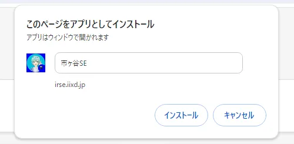③デスクトップとスタートメニューに追加されます。
 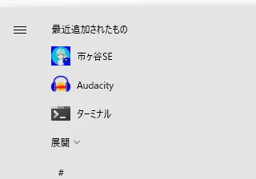
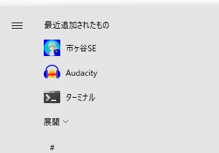
またタスクバーに追加したい方は「はい」をクリックしてください。
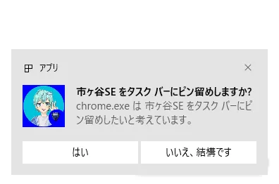市ヶ谷SEは、お手持ちのスマートフォンにアプリとしてインストールすることができます。
以下に手順を記載しますので参考にしてください。
①トップページを開き、右上の点3つをタップする
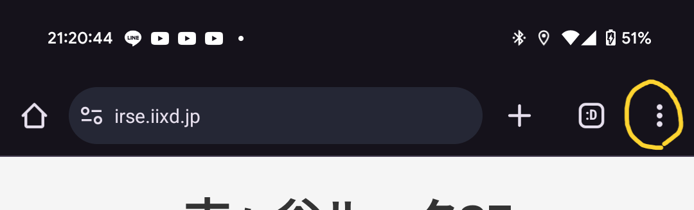②「ホーム画面に追加」をタップ
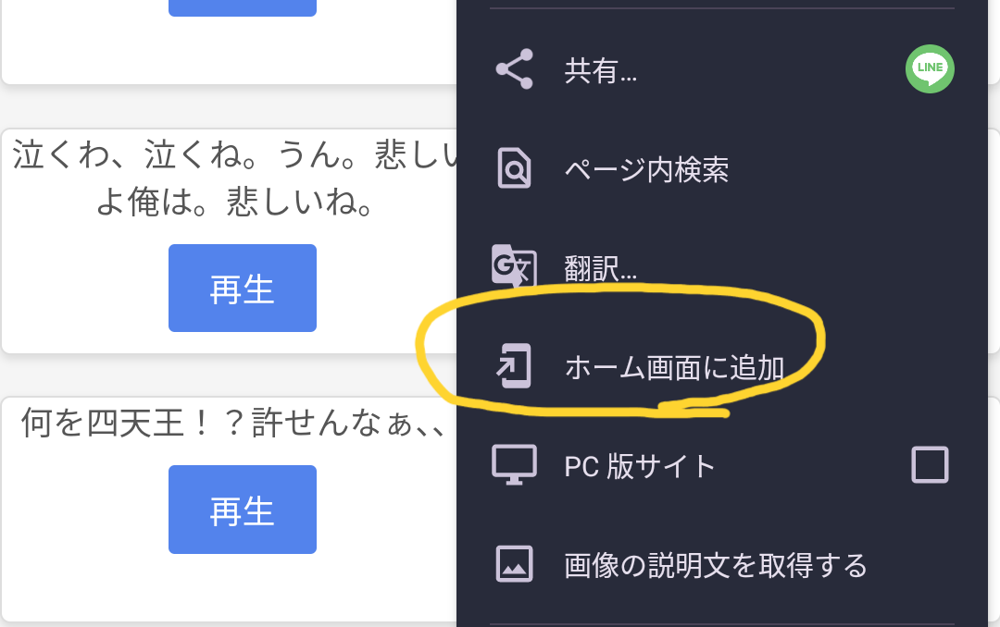③「インストール」をタップ
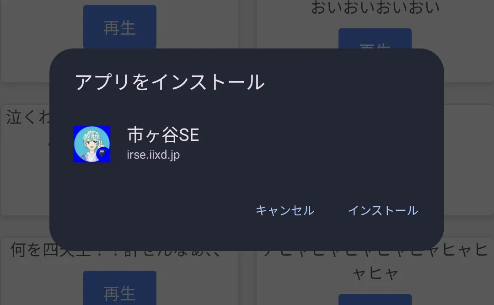④このような通知が表示されたら完了です。
アプリ一覧の中にあると思います。
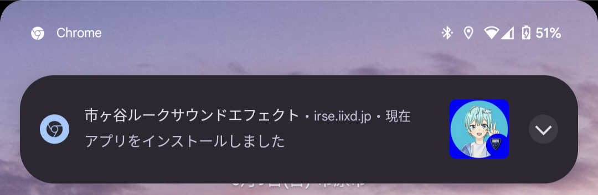 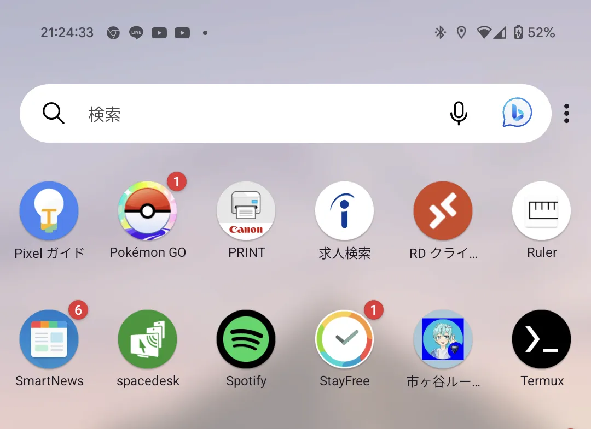①トップページを開き、画面中央下の共有マークをタップ
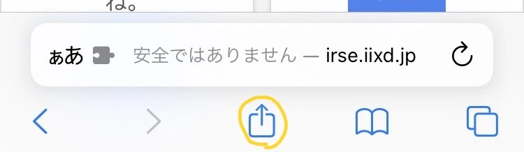②「ホーム画面に追加」をタップ
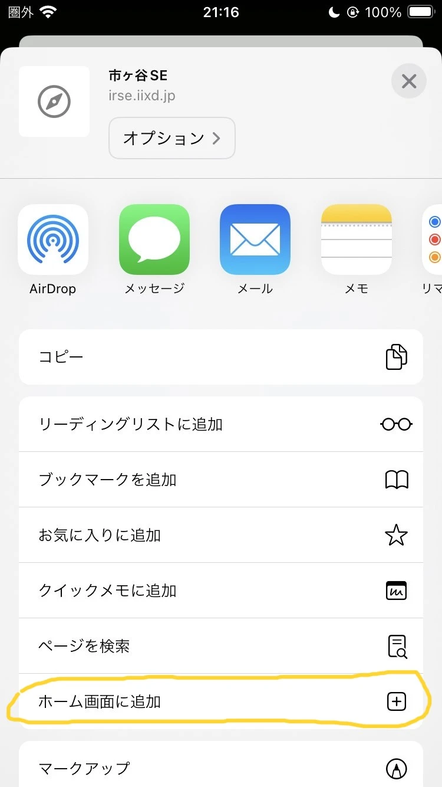③「追加」をタップ
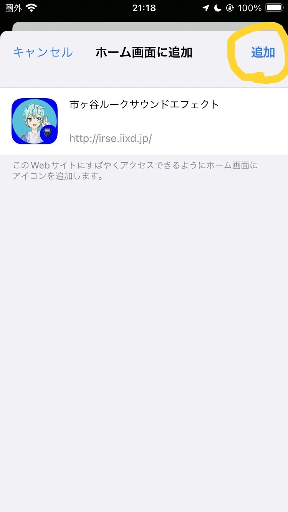④ホーム画面に追加されます。
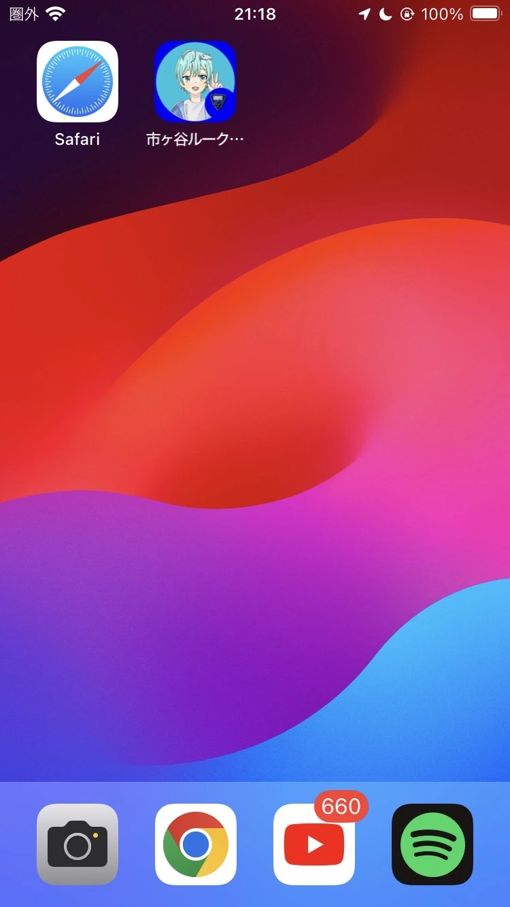①トップページを開き、画面右上の点3つをクリックし、
「保存と共有」から「ページをアプリとしてインストール...」をクリック
②「インストール」をクリック
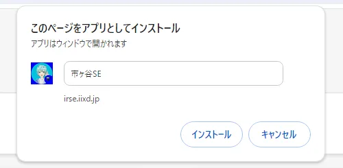③デスクトップとスタートメニューに追加されます。
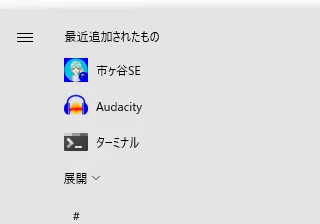
またタスクバーに追加したい方は「はい」をクリックしてください。
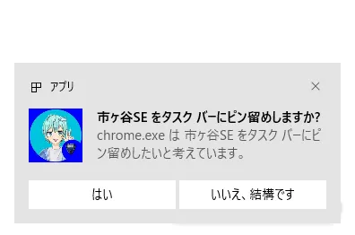